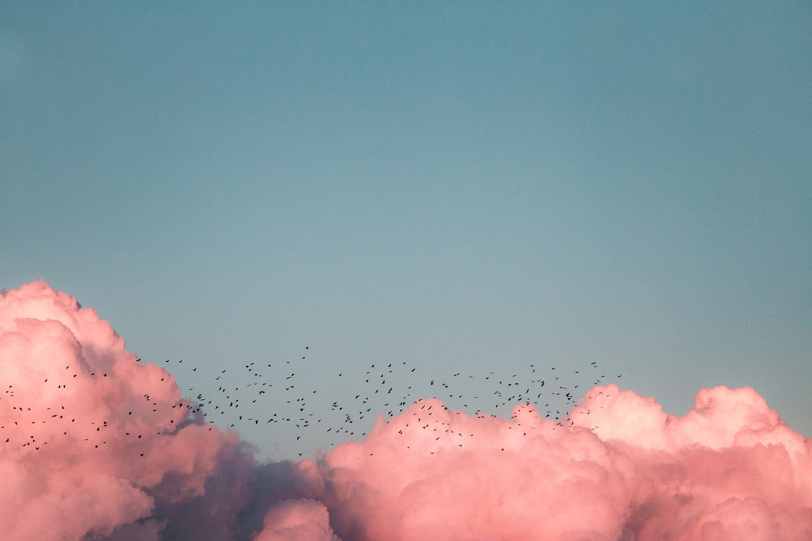

Een diavoorstelling, met zorg gemaakt
Wilt u een diavoorstelling voor de uitvaart laten maken? Wij zetten uw foto’s in een rustige, doorlopende film op de muziek die u kiest, zodat u er zelf geen tijd aan kwijt bent.
Vanaf €249 incl. btw · ook op korte termijn · alle prijzen

Een diavoorstelling of een fotofilm?
Een diavoorstelling toont foto’s één voor één op een scherm. Het is een vertrouwde manier om tijdens een uitvaart samen herinneringen te bekijken. Vaak wordt zo’n voorstelling haastig zelf in elkaar gezet, in de dagen dat er al zoveel geregeld moet worden.
Een fotofilm is de verzorgde versie daarvan: de foto’s lopen vloeiend in elkaar over, het tempo past bij de muziek en de volgorde vertelt een verhaal. Voor de aanwezigen voelt dat als één geheel. U levert de foto’s aan, wij doen de montage.
In drie stappen, zonder zorgen.
-
1
U neemt contact op
Bel, app of mail. We bespreken rustig uw wensen, de datum van de uitvaart en de muziek.
-
2
De familie deelt beelden
U ontvangt één link. Iedereen kan daar foto’s en filmpjes neerzetten, vanaf elke telefoon of computer.
-
3
Wij maken de film
De film staat op tijd klaar. U bekijkt hem, geeft eventuele wijzigingen door en stuurt hem naar het uitvaartcentrum.
Zo wordt uw diavoorstelling één geheel
Selectie en volgorde
Wij brengen samenhang aan in de foto’s die u aanlevert, met ruimte voor uw wensen.
Op de muziek
Overgangen en tempo volgen de nummers die u kiest.
Aanpassen kan
Wilt u iets anders? Aanpassingen zijn mogelijk voordat de film naar het uitvaartcentrum gaat.
Elke film is anders, net als ieder leven.
Klassiek of Modern. Alles is aan te passen aan wie uw dierbare was.
Alle voorbeeldeninclusief btw, voor de stijl Klassiek. De stijl Modern, met foto’s én filmpjes: €299.
Bekijk wat er inbegrepen is“Het was gisteren zo’n prachtig en eervol afscheid…veel mensen die mama niet of niet goed kenden kwamen naar ons toe met de opmerking dat ze mede door de filmpjes een heel goed beeld van mn moeder hadden gekregen!”
Veelgestelde vragen over een diavoorstelling
Is een diavoorstelling hetzelfde als een fotofilm?
Bijna. Een fotofilm is een diavoorstelling met vloeiende overgangen, afgestemd op muziek, als één videobestand.
Hoeveel foto’s kan ik aanleveren?
In het pakket zitten 60 foto’s. Per 5 extra foto’s betaalt u €10.
Hoe lang van tevoren moet ik de foto’s sturen?
Zonder meerprijs uiterlijk 24 uur voor de ceremonie. Krapper kan ook, met een spoedtoeslag van €99.
Kan het uitvaartcentrum de film afspelen?
U ontvangt een mp4 die op vrijwel elk scherm werkt. Is een ander formaat nodig, dan zetten wij het om.
Wat kost een diavoorstelling voor de uitvaart?
Klassiek €249, Modern €299, inclusief btw. Spoed en extra’s vindt u op de kostenpagina.